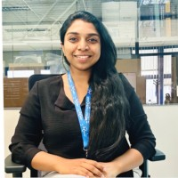

I am a computational physicist and Earth-space interactions researcher. I completed my PhD in Space Science and Technology at the University of Trento and Fondazione Bruno Kessler, Italy. My work combines satellite observations, ionospheric physics, deep learning, anomaly detection, and rigorous statistical validation to investigate transient geophysical phenomena.
Investigating possible statistical associations between ionospheric electric-field perturbations and seismic activity using satellite observations.
Developing anomaly-detection and deep-learning models for multivariate time series and ionospheric spectrogram data.
Studying solar-wind disturbances, coronal mass ejections, and their impacts on Earth’s magnetosphere and upper atmosphere.
University of Trento & Fondazione Bruno Kessler, Italy · 2022–2026
Deep-learning-based anomaly detection in ionospheric observational data
and statistical association with seismic activity.
Politehnica Bucharest, Romania · 2026
Machine learning and computer vision approaches for DEMETER ICE
electric-field data and seismo-ionospheric anomaly detection.
Greece · 2025
Collaborative research on ionospheric variability and multi-instrumental
approaches to seismo-ionospheric phenomena.
Amrita Vishwa Vidyapeetham, India · 2017–2022
Master’s thesis research at IIT Indore on coronal mass ejections, interplanetary
sheaths, corotating interaction regions, and geomagnetic effects.
LinkedIn | Google Scholar | ORCID | GitHub